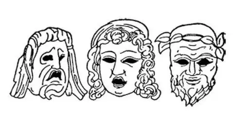
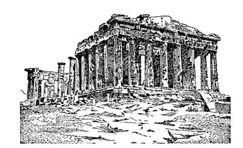
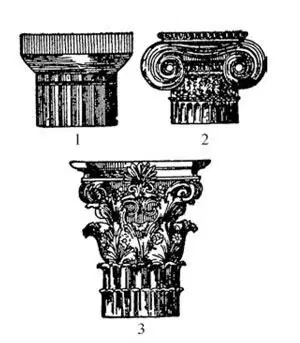
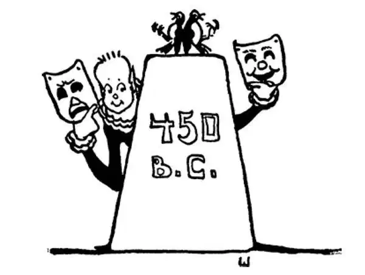

27
The Golden Age
黄金时代

WHEN we were talking about the Stone Age and the Bronze Age, I told you that later we should also hear of a Golden Age.
Well, we have come to the Golden Age now. This doesn't mean that people at this time used things made of gold, nor that they had a great deal of gold money. It means—well, let us see what sort of a time it was, and then you can tell what it means.
After the wars with Persia, Athens seemed to have been cheered up by her victory to do wonderful things, and the next fifty years after the Persians were driven out of Greece—that is, 480 to 430 B.C.—were the most wonderful years in the history of Greece, and perhaps the most wonderful years in the history of Europe.
Athens had been burned down by Xerxes. At the time it happened this seemed like a terrible misfortune. But it wasn't. The people set to work and built a much finer and much more beautiful city than the old one had been.
Now, the chief person in Athens at this time was a man named Pericles. He was not a king nor a ruler, but he was so very wise and such a wonderful speaker and such a popular leader that he was able to make the Athenians do as he thought best. He was like the popular captain of a football or soccer team who is a fine player himself and makes fine players of all the others on his team. Athens was his team, and he trained it so well that all the players were tops in their positions. Some people became great artists. Some people became great writers. Others still became great philosophers . Do you know what philosophers are? They are wise men and women who know a great deal and love knowledge.
The artists built many beautiful buildings, theaters, and temples. They made wonderful statues of the Greek gods and goddesses and placed them on the buildings and about the city.

Tragic and comic masks
“滑稽”面具和“悲剧”面具
The philosophers taught the people how to be wise and good.
The writers composed fine poems and plays. The plays were not like those we have nowadays but were all about the doings of the gods and goddesses.
The theaters were not like those we have nowadays, either. They were always out of doors, usually on the side of a hill, where a grandstand could be built facing the stage. There was little or no scenery, and instead of an orchestra of musicians, there was a chorus of singers to accompany the actors. The actors wore false faces or masks to show what their feelings were, a comic mask with a grinning face when they wanted to be funny and a tragic mask with a sorrowful face when they wanted to seem sad.
Perhaps you have seen pictures of these masks, for in the decorations of our own theaters these same comic and tragic masks are sometimes used.
Athens had been named after the goddess Athena, who was supposed to watch out for and look after the city. The Athenians thought she should have a special temple. Accordingly, they built one to her on the top of a hill called the Acropolis. This temple they called in her honor the Parthenon, meaning the maiden, one of the names by which she was known.
The Parthenon is considered by some people to be the most beautiful building in the world, although as you see by the picture, as it is today, it is now in ruins. In the center of this temple was a huge statue of Athena made of gold and ivory by a sculptor named Phidias. We are told that it was the most beautiful statue in the world as the Parthenon was the most beautiful building, but it has completely disappeared, and no one knows what became of it. One might guess, however, that the gold and ivory tempted thieves, who may have stolen it piece by piece.
Phidias made many other statues on the outside of the Parthenon, but most of these have been carried away and put in museums or have been lost or destroyed.

The Parthenon （帕台农神庙）
This statue of Athena and the other sculptures on the Parthenon made Phidias so famous that he was asked to make a statue of Zeus to be placed at Olympia, where the Olympic Games were held. The statue of Zeus was finer even than the one he had made of Athena and was so splendid that it was called one of the Seven Wonders of the World. You remember the pyramids of Egypt and the Hanging Gardens of Babylon were two others of the Seven Wonders. It is interesting that each of these three Wonders was located in a different continent. Can you tell which was in Africa, which in Asia, and which in Europe?
Phidias has been called the greatest sculptor who ever lived, but he did a thing which the Greeks considered a crime and would not forgive. We do not see anything so terribly wrong in what he did, but the Greeks' idea of right and wrong was different from ours. This is what he did. On the shield of the statue of Athena that he had made, Phidias carved a picture of himself and also one of his friend Pericles. It was merely a part of the decoration of the shield, and hardly anyone would have noticed it. But according to the Greek notion, it was a sacrilege to make a picture of a human being on a statue of a goddess. When the Athenians found out what Phidias had done, they threw him into prison, and there he died.
The Greeks used different kinds of columns on their buildings, and these columns are used in many public and in some private buildings today. I'll tell you what each kind is like; then see how many you can find.
The Parthenon was built in a style called Doric.
The top of the column is called the capital, and the capital of the Doric column is shaped like a saucer with a square cover on top of it. There was no base or block at the bottom of the column. It rested directly on the floor. As the Doric column is so plain and strong-looking, it was called the man's style.
The second style is calledIonic .
The capital of the Ionic column has a base, and the capital has ornaments like curls underneath the square top, and the column has a base.
As this column is more slender and more ornamental than the Doric, it was called the woman's style.
The third style is called Corinthian.

1. Doric （陶立克式）2. Ionic （爱奥尼亚式）3. Corinthian （科林斯式）
The capital of the Corinthian column is higher than either of the other two and still more ornamental. It is said that the architect who first made this column got his idea for its capital from seeing a basketful of toys that had been placed on a child's grave as was the custom instead of flowers. The basket had been covered with a slab, and the leaves of the thistle called the acanthus had grown up around the basket. It looked so pretty that the architect thought it would make a beautiful capital for a column, and so he copied it.
I asked some boys which one could find the most columns. The next day one boy said he had seen two Ionic columns, one on each side of the door of his house. The second had seen ten Doric columns on the savings bank. But the third said he had seen 138 Corinthian columns.
“Where on earth did you see so many?” I asked.
“I counted the lampposts from my house to the school,” he said, “They were kind of Corinthian columns.”
One of the friends of Pericles was a man named Herodotus. He wrote in Greek the first history of the world. For this reason Herodotus is called the Father of History, and someday if you study Greek you may read what he wrote in his own language. Of course, at that time there was very little history to write. What has happened since hadn't happened then. He wrote about Egypt and other parts of the ancient world. He wrote about places so far away that most Greeks had never visited them. One was Kush, in Africa way south of Egypt. Mostly Herodotus's history was a story of the wars with Persia, which I have just told you about.
In those days every once in a while a terrible contagious disease, called a plague , would break out, and people would be taken sick and die by the thousands, for the doctors knew very little about the plague or how to cure it. Such a plague came upon Athens, and the Athenians died like poisoned flies. Pericles himself nursed the sick and did all he could for them, but finally he, too, was taken sick with plague and died. This happened at the very end of the Golden Age, which has been called in honor of its greatest man, the Age of Pericles.
【中文阅读】
我们在说石器时代和青铜时代的时候，我就告诉过你，后面我们也会听到有关黄金时代的故事。
那么，现在我们来谈谈黄金时代。黄金时代并不是说那个时代的人使用的物品都是黄金做成的，也不是说他们有大量的金币。它的意思是——嗯，还是让我们看 看这是个什么样的时代，然后你们就会明白它是什么意思了。
与波斯的战争过后，雅典人被胜利的喜悦激励着去创造各种美妙的事物，在波斯人被赶出希腊后接下来的五十年——也就是，公元前480年到公元前430年——是希腊历史上最兴盛的年代，可能也是欧洲历史上最辉煌的岁月。
雅典被薛西斯烧毁了。当时发生的事看上去像是个可怕的灾祸，但是并非如此。人们毅然投入到重建工作中，建起一座比旧城更好、更美的城市。
当时雅典的领袖人物名叫伯里克利。他既不是国王，也不是管理者，但是他非常有智慧，善于演说，是深受大众欢迎的领头人，所以他认为怎样做最好，雅典人就愿意照他说的那样去做。他很像一个受人爱戴的橄榄球队或足球队的队长，自己本身就是个优秀的球员，还能使自己的队友都发挥出水平，也成为优秀的球员。雅典就是他的球队，他把这支队伍训练得非常好，所有的球员都在各自的位置上发挥最大的能力。有些人成了伟大的艺术家，有些人成了伟大的作家，还有一些人成了伟大的“哲学家”。你们知道哲学家是干什么的吗？他们是些聪明的男人和女人，学识丰富，热爱知识。
艺术家们建造了很多美丽的房屋、剧院和神庙。他们为希腊的男神和女神制作了精美的雕像，并将其放置在建筑物上和城市各处。
哲学家们教人们怎样变得明智而善良。
作家们创作了优美的诗篇和戏剧。和我们今天的戏剧不一样，那时的戏剧都是表演男女神灵的事迹。
剧院和我们今天的也不一样，是露天的，一般建在小山坡上，这样面对舞台就可以建起一个大看台。这种剧院很少或根本没有布景，没有乐师组成的管弦乐队，只有一群歌手用合唱来为演员们伴奏。演员们脸戴假面或面具来表示他们的喜怒哀乐，当要表示滑稽可笑的时候，就戴上咧嘴而笑的“滑稽”面具，而想要显得悲伤的时候，就戴上愁眉苦脸的“悲剧”面具。
或许你见过这些面具的图片，因为这样的滑稽和悲剧面具有时候也会被用作现在剧院的装饰物。
雅典是以女神雅典娜的名字命名的，据说雅典娜在守护和照看着这个城市。雅典人认为她应该有一座与众不同的庙宇。因此，他们专门在阿克罗波利斯山 ［1］ 的山顶上给她建造了一座神庙。为了纪念她，他们称神庙为“帕台农”，在希腊语里“帕台农”的意思是“少女”，而少女也是对雅典娜的称呼之一。
有些人认为帕台农神庙是世界上最美的建筑物，不过你从照片上可以看到，帕台农神庙现在大部分已毁坏。这座神庙的中央放着一座巨大的雅典娜雕像，它是由一位名叫菲迪亚斯的雕刻家用黄金和象牙制作的。据说，它是世界上最美的雕像，正如帕台农神庙是世界上最美的建筑一样，它已经消失得无影无踪了，没人知道它现在怎么样了。但是，有人猜测黄金和象牙引来了盗贼，他们可能将雕像一块一块地偷走了。
菲迪亚斯在帕台农神庙外面还制作了很多其他雕像，但是其中大部分已经被搬走放进了博物馆里，或丢失或毁坏了。
帕台农神庙的雅典娜雕像和其他一些雕塑让菲迪亚斯名声大噪，所以他被请去为众神之父宙斯制作雕像，做成后，雕像将放在举行奥林匹克运动会的奥林匹亚山上。宙斯雕像甚至比雅典娜雕像还要精美。它如此完美，因此被称为世界七大奇迹之一。还记得吧，埃及的金字塔和巴比伦的空中花园是七大奇迹中的两个。有趣的是，这三大奇迹分别位于不同的大洲。你能说出哪个在非洲，哪个在亚洲，哪个在欧洲吗？
菲迪亚斯被称为有史以来最伟大的雕刻家，但是他犯下了一个希腊人认为无法饶恕的罪行。在我们现在看来，他所做的也算不上什么了不得的错事，但是希腊人对错误观念的看待和我们不一样。他是这样“犯了罪”的：在他制作的雅典娜神像的盾牌上面，他刻了一副自己的像，也刻了一副他朋友伯里克利的像。那只不过是盾牌上装饰图案的一部分，几乎没有人注意到它。但是按照希腊人的观念，在女神神像上刻人像是犯了渎神罪。雅典人发现了菲迪亚斯做的事，就将他投入了监狱，他后来就死在那里。
希腊人在建筑物上使用各种各样的圆柱，这些圆柱如今还用在很多公共建筑和一些私人建筑里。我来告诉你每一种圆柱是什么样子，看看你能找到多少种。
帕台农神庙的建筑风格叫做“陶立克式”。
圆柱的顶端称为柱头，陶立克式圆柱的柱头形状有点像顶着个正方形盖子的茶碟。圆柱的底部没有基座或基石，而是直接立在地上。因为陶立克式圆柱形式简朴又充满阳刚之气，所以被称为男性化的风格。
第二种圆柱的风格叫做“爱奥尼亚式”。
爱奥尼亚式圆柱的柱头有个基座，正方形的顶部下有涡卷形装饰物，圆柱下有底座。
因为这种圆柱比陶立克式圆柱更纤细，也有更多的装饰，所以被称为女性化的风格。
第三种圆柱的风格叫做“科林斯式”。
科林斯式圆柱的柱头比前两种都高，装饰得更繁复。据说第一个做出这种圆柱的建筑家是看到一个孩子坟墓上摆放着一个装满玩具的篮子而获得了灵感，当时风俗是在孩子坟墓上放玩具，而不是放鲜花。篮子上盖着一片瓦，一种属爵床科植物的蓟叶长在篮子的四周。在叶子的衬托下，篮子看上去非常漂亮，建筑家想，用这个式样做圆柱的柱头肯定很美，于是他仿照它做了这样的柱头。
我曾问过几个男孩谁能找到最多的圆柱。第二天，一个男孩说他看到了两根爱奥尼亚式的圆柱，分别立在他自家房门的两边。第二个说在银行看到了十根陶立克式圆柱。但是，第三个说他看到了一百三十八根科林斯式的圆柱。
“你到底在哪儿看到这么多圆柱呢？”我问道。
“我把从家到学校的路灯柱数了一遍，”他说，“他们有点像科林斯式圆柱。”
伯里克利有个朋友叫希罗多德，他用希腊语写了第一本世界史。希罗多德因此 被称为“历史之父”，如果你以后学希腊语的话，可能会读到他用希腊语写的原文。当然，那时可记载的历史很少。自那以后发生的事情那个时候“还没”发生呢。他写了古埃及和古代世界其他一些地方的历史。他写的有些地方非常遥远，大多数希腊人都没去过。其中之一是位于非洲埃及以南很远的库施国。希罗多德所写的历史大部分内容是描述希腊与波斯之间战争的经过，这段历史我刚给你们讲过。
在那个时代，每隔一段时间，就会爆发一种可怕的传染病，叫“瘟疫”。数以千计的人会染病而死去，因为那时的医生对瘟疫或如何治疗瘟疫知之甚少。这样一种瘟疫侵袭了雅典，雅典人如同中毒的苍蝇一样成批死去。伯里克利亲自护理患者，为他们尽心尽力，但是最后，他自己也染上瘟疫，病死了，黄金时代也就在此时终结了。为了纪念这个时代最伟大的人，黄金时代也被称为“伯里克利时代”。

公元前450年